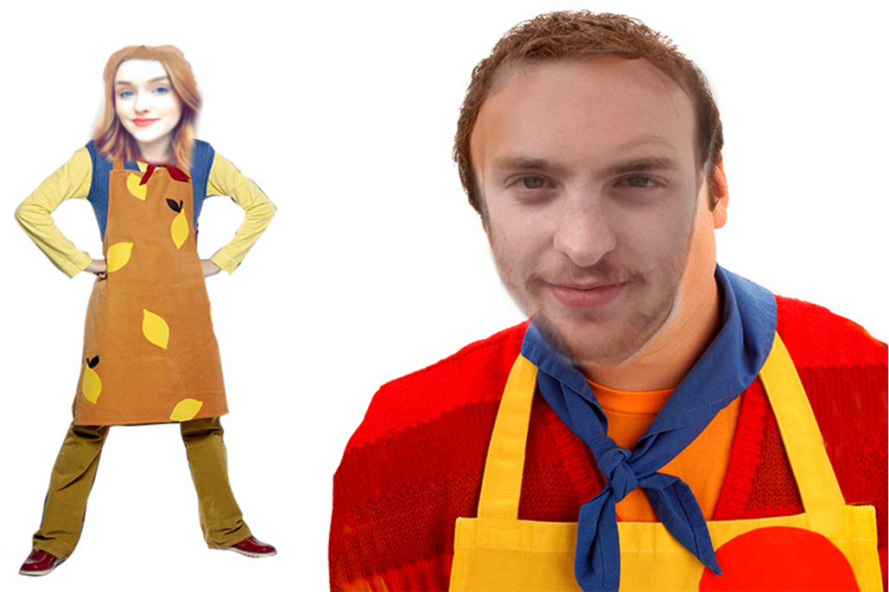

Welcome to Big Cook, Little Cook's guide to cooking! Please use the links below to create all your meals for the day!
Breakfast is the first meal of a day, most often eaten in the early morning before undertaking the day's work. The word refers to breaking the fasting period of the prior night. There is a strong tendency for one or more "typical", or "traditional", breakfast menus to exist in most places, but the composition of this varies widely from place to place, and has varied over time, so that globally a very wide range of preparations and ingredients are now associated with breakfast.
Lunch, the abbreviation for luncheon, is a meal typically eaten at midday. The origin of the words lunch and luncheon relate to a small snack originally eaten at any time of the day or night. During the 20th century the meaning gradually narrowed to a small or mid-sized meal eaten at midday. Lunch is commonly the second meal of the day, after breakfast. The meal varies in size depending on the culture, and significant variations exist in different areas of the world.
Dinner usually refers to the most significant and important meal of the day, which can be the noon or the evening meal. However, the term "dinner" can have many different meanings depending on the culture; it may mean a meal of any size eaten at any time of the day. Historically, it referred to the first meal of the day, eaten around noon, and is still sometimes used for a noon-time meal, particularly if it is a large or main meal. The meaning as the evening meal, generally the largest of the day, is becoming a standard in many parts of the English-speaking world.